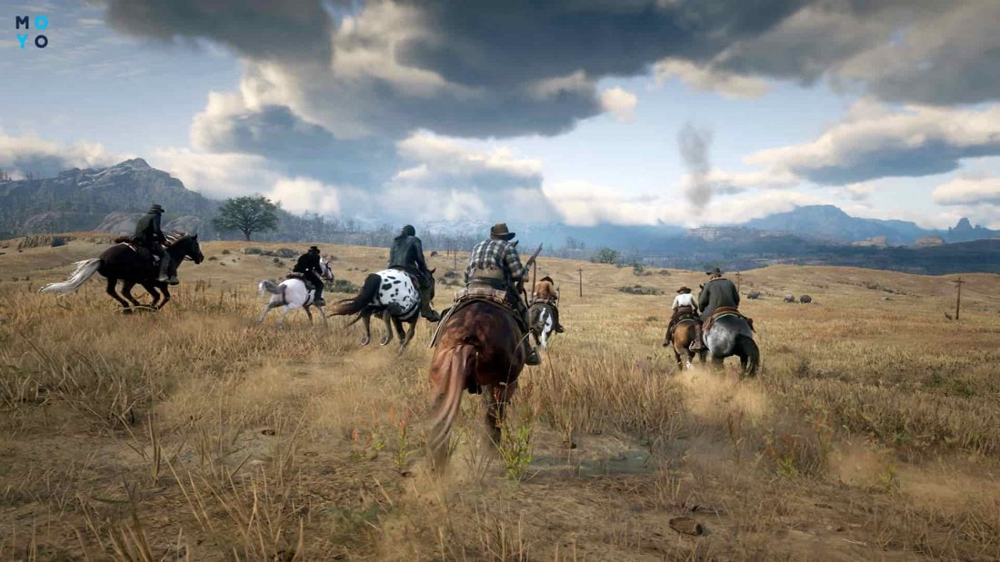

Если раньше игроки хотели побольше экшена, перестрелок и взрывов, теперь тяготеют к продуманным сюжетным играм. Также не думают сдавать позиции многопользовательские концепции в рейтинге игр на ПК.
Собрали ТОП игр для ПК, которые до сих пор в тренде. И про анонсируем те, что ожидаются в течение года.
В каждом десятилетии свои вечные истории. Перед вами 10 лучших, пересмотрите, вспомните, понастольгируйте.
Продумывай каждый шаг: Лучшие стратегии на ПК — разберем 10 самых актуальных продуктов 2022 года
Три причины почему следует обратить внимание на игру:

Студия по разработке игр CD Projekt Red всегда славились хорошими играми. А серия «Ведьмак» буквально стала визитной карточки польской студии. И «Witcher 3: Wild Hunt» — это та игра, где смакуешь каждую секунду прохождения, так как тут можно взаимодействовать практически с каждым объектом. Прямо как в реальном мире!
Первая локация «Белый Сад» небольшая — проходится быстро, квестов не так уж и много. Зато потом перед игроком открывается огромный средневековый игровой мир: здесь лес и холмы, реки и заснеженные вершины. И всё это сдобрено полчищами магических чудовищ, мародерами, десятками жилых и заброшенных деревень и нескольких больших городов.
Три аспекта ценности игры:
GTA 5 — самая популярная игра Rockstar, которая побила все мыслимые рекорды игровой индустрии. История «засасывает» настолько, что можно провести день, не заметив, как он закончился. Весь игровой мир открыт сразу — не нужно ждать, пока станет доступным какой-то район. Можно сесть в авто и изучить всю карту за раз.
В сюжетной части 3 главных героя: Майкл и Тревор — отпетые бандиты, темнокожий Франклин только стал на «скользкую дорожку» криминального мира. В каждом из них своя сверхспособность:
В некоторых миссиях придется переключаться между героями. Они будут идти на задание вместе. Пока один будет грабить, второй — стоять «начеку», охраняя партнера, третий будет колесить по округе высматривая стражей правопорядка.
Одну и ту же миссию можно пройти по-разному: бросаться гранатами «в лоб», продумывать многоходовочки. Особенно хорошо это применять в онлайн-версии. Там вариативность подходов к одной задаче максимальная. Транспорт и оружие осваиваются быстро, спустя несколько минут игрок полностью овладевает ними.
В тему: Как играть в Майнкрафт по сети: 4 беспроигрышных способа и борьба с ошибками
Игра цепляет, потому что это «детище» Rockstar с атмосферой «Дикого Запада». Как и в GTA V, здесь проработанный сюжет и мощный мультиплеер. Можно охотиться на плохишей, грабить богатых на благо бедных и убегать от шерифов.
Red Dead совмещает в себе открытый мир, сотни активностей, детально осмысленный сюжет и сотни сторонних миссий. Именно поэтому игра в топ 10 лучших игр XXI века. Чтобы убедиться — посидите с часок в RDR 2.
Чтобы ноут был мощней:Как увеличить производительность ноутбука — 8 способов